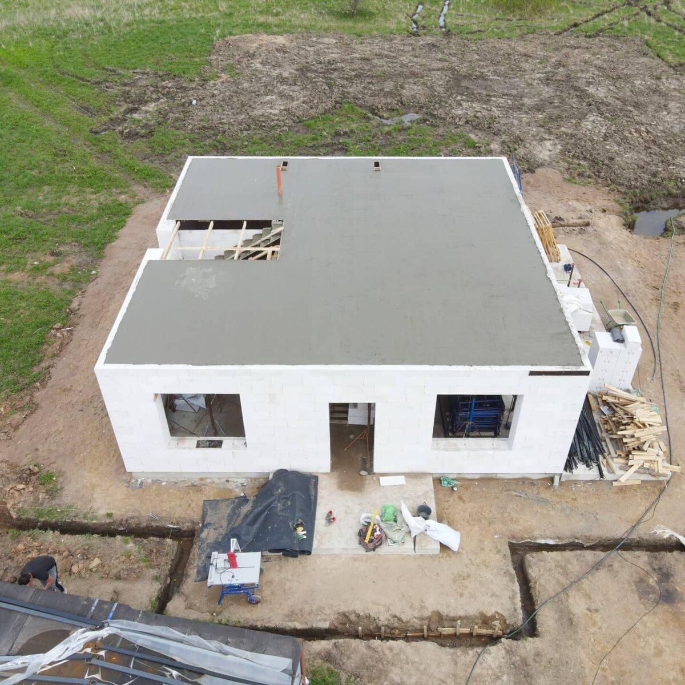
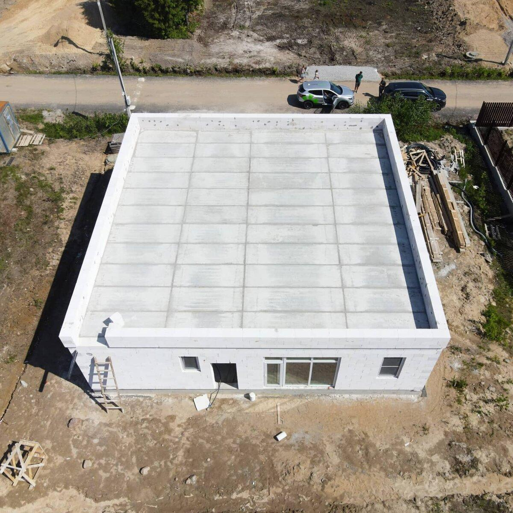

Перекрытие — узел, на котором держится вся прочность каменного дома и комфорт жизни в нём. Для дома из газобетона есть четыре основных варианта, и каждый из них работает в своих сценариях.
Четыре основных варианта
- Сборные железобетонные многопустотные плиты. Заводская готовность, монтаж за день.
- Монолитное железобетонное перекрытие. Заливается на месте.
- Перекрытия по деревянным балкам. Лёгкий, но «зыбкий» вариант.
- Сборно-монолитное ребристое перекрытие «Марко». Гибрид сборных балок и монолитной заливки.
Чаще всего на наших объектах работаем с первым и вторым. Деревянные перекрытия в газобетонном доме — спорная экономия: основной минус — зыбкость, и в каменном доме хочется каменное же перекрытие. «Марко» по стоимости близок к монолиту, у него своя ниша.
Сборные железобетонные плиты — самый оптимальный вариант
На наш взгляд, сборные плиты выигрывают по сумме факторов.
- Монтаж за один день — кран, бригада, всё, перекрытие стоит.
- Меньшая стоимость даже с учётом монолитного железобетонного пояса под опирание.
- Можно укладывать без пояса — сразу на блок, заливая пояс в торце плит.
- Можно сразу продолжать работы — не нужно ждать набора прочности.
- Не нужен кран для подачи блоков на второй этаж — поднимают уже бригадой.
- Хорошие прочность и шумоизоляция при небольшом весе.
- Нужна грамотная проектная работа и раскладка плит.
- Заранее заказать на заводе — в горячий сезон есть ажиотаж.
- Нужен монолитный железобетонный пояс под опирание плит или в торце.
- Возможность проезда крана и большегрузной техники к участку.

Монолитное железобетонное перекрытие
По прочности — большой запас при стандартном армировании. Дороже всех остальных вариантов (по цене сравнимо с «Марко»). Но у монолита есть преимущества, которые иногда перевешивают.
- Большая прочность.
- Возможность устройства на нестандартных формах: выступы, эркеры, балконы, круглые формы.
- Не нужен отдельный монолитный пояс — перекрытие само работает как пояс.
- Проще сделать штукатурные или лофт-потолки без потолочной конструкции.
- Нужен технологический перерыв до набора прочности — стройка ждёт.
- Стоимость выше других вариантов.
- Время на устройство опалубки, армирование, заливку и набор прочности.
- Большой собственный вес ложится на фундамент.

Когда что ставить
- Стандартный прямоугольный дом, бюджет в норме, кран проезжает — сборные плиты. Сроки короче, экономика лучше.
- Сложная геометрия: эркеры, балконы, круглые комнаты — монолит. Сборные плиты на нестандарт просто не лягут.
- Лофт-потолки, штукатурные потолки без подшива — монолит. Чистая ровная плоскость снизу.
- Хочется бюджет ещё ниже и готовы мириться с зыбкостью — деревянные балки. Но в каменном доме мы это не рекомендуем.
Типовые ошибки при выборе перекрытия
- Деревянные балки в каменном доме «ради экономии». Зыбкость пола, ограничения по нагрузке, плохая шумоизоляция — экономия превращается в минус.
- Сборные плиты без пояса на стене. Опора без распределения нагрузки — риск трещин по верхнему ряду кладки.
- Монолит на сложном фундаменте без расчёта. Большой вес ложится на фундамент, который изначально не учитывал такую нагрузку.
- Заказ плит в горячий сезон в последний момент. Завод не успевает — стройка стоит неделями.
Что DOMGAZOBETON делает на своих объектах
За 10 лет работы и 300 построенных домов выстроилась практика: на стандартных прямоугольных проектах — сборные железобетонные плиты с монолитным поясом, на сложной геометрии — монолит. Деревянные перекрытия в наших проектах из газобетона почти не встречаются — каменный дом просит каменного перекрытия. Наши проекты, этапы строительства.
Частые вопросы
Какое перекрытие в газобетонном доме лучше — сборные плиты или монолит?
Для большинства типовых проектов — сборные железобетонные плиты: быстрее, дешевле, без длинного технологического перерыва. Монолит выбирают, когда есть эркеры, балконы или нестандартная геометрия.
Можно ли укладывать сборные плиты сразу на газобетон без пояса?
Технически можно, но мы так не делаем. Без распределяющего пояса нагрузка концентрируется на верхнем ряду блоков, есть риск трещин. Мы укладываем пояс под плитами — заодно он работает как надоконные перемычки.
Подходят ли деревянные перекрытия для каменного дома?
Технически — да. Практически — экономия сомнительная: зыбкость пола, ограничения по нагрузке, хуже шумоизоляция. В каменном доме обычно ставят каменное перекрытие.
Что такое сборно-монолитное перекрытие «Марко»?
Гибрид: на стену укладывают сборные балки, между ними — заполнение из лёгких блоков, сверху заливают тонкий слой бетона. По стоимости сопоставимо с монолитом, в России — нишевое решение.
Источники
- НААГ — рекомендации по узлам кладки из газобетона: gazo-beton.org.
- ДОМ.РФ — рынок ИЖС: дом.рф.